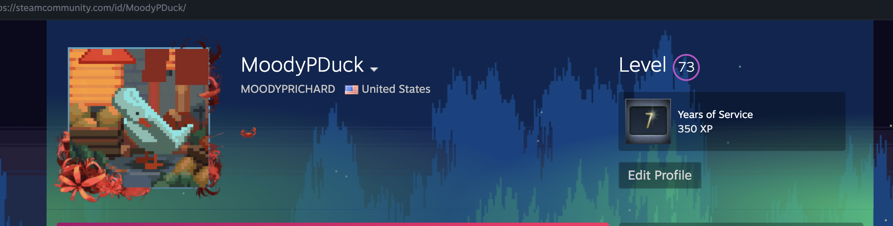

Into a different world
Another one of my hobbies is playing video games. Games have always been a source of excitement and a way to de-stress. From the many open worlds, the many multiplayer battles, or even getting lost in a story, gaming offers limitless possibilities for fun.
Some of my favorite games to play, as shown below, include Elden Ring, the Fallout series, and the Final Fantasy series.
Linked below is a video from a youtuber named "Improvement Pill" which was a video that I watched years ago and it kind of stuck with me. Video games are an amazing thing with many benefits included, they are something that make me who I am.
